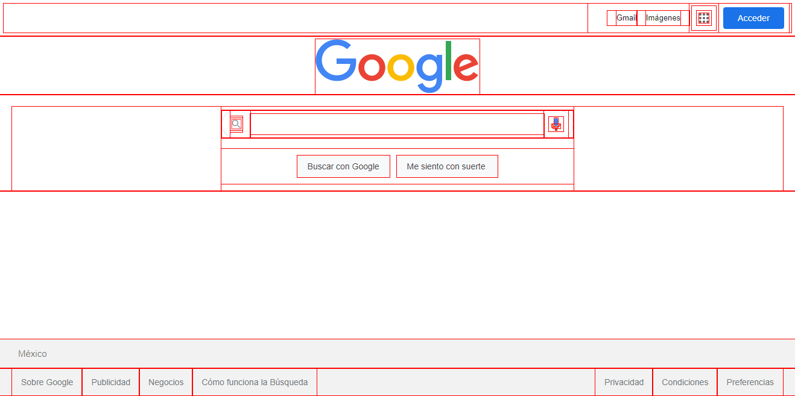
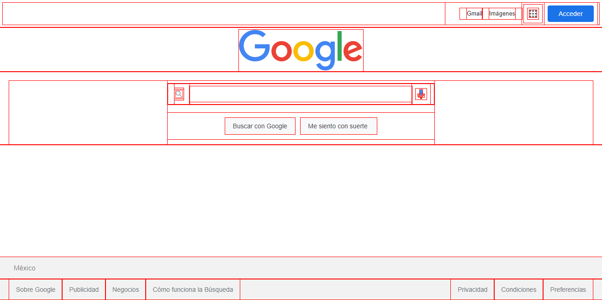

BOX MODEL
El nombre 'box-model' (modelo de caja) se llama así porque, en los navegadores, todo se construye a partir de cajas. Entonces, lo primero que debemos de entender, es que cada elemento que definimos en un documento HTML se mostrará en el navegador como una caja rectangular esta es la forma en que se representan todos los elementos, no existen elementos triangulares, redondos, poligonales etc. Todos los elementos en HTML por defecto son rectangulares ya que internamente el navegador dibuja un rectángulo.
.jpg) 

Como ya lo mencione anteriormente cada elemento HTML en una página web es una caja, pero hay dos tipos básicos de cajas:
-Block boxes
-Inline boxes
Estos dos tipos de cajas, existieron desde el principio de la web:Cajas de bloque (Block boxes)
Las cajas de bloque, por defecto, ocupan todo el espacio a lo ancho del contenedor. El elemento HTML común para una caja de bloque es el elemento (div).

Cajas en línea (Inline boxes)
Las cajas en línea, por defecto, toman el espacio según el contenido envuelto. El elemento HTML más común para una caja en línea es el elemento (span).
.jpg)
Las áreas del modelo de caja
-Internos : Conetent,padding,border
-Externos: Margin
Estas áreas se apilan para formar el modelo de caja o box model. Cada elemento HTML es una caja que podemos controlar en el espacio exterior con la propiedad margin, después, podemos darle un borde y con la propiedad padding, también podemos proporcionar los espacios interiores entre el contenido y el borde dentro de la caja..jpg)